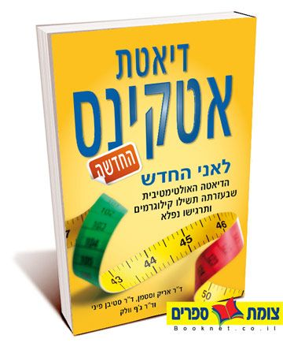
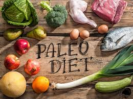
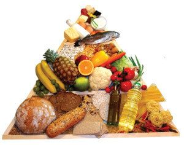
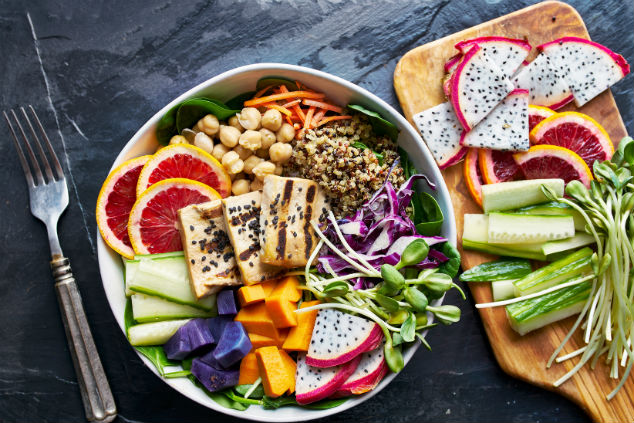

דיאטת אטקינס
סוג הדיאטה הזו דואגת לשמור על צריכת פחמימות נמוכה. למעשה, זוהי המגבלה העיקרית, ההגבלות לא חלות על חלבונים ושומנים.
הרעיון בדיאטה הנ"ל הוא שהפחמימות הינם הדלק העיקרי של גופנו וכאשר מגבילים אותם הגוף מתחיל באופן טבעי ולחפש "דלק חלופי" ופונה ישירות למאגרי השומן שלנו. הדיאטה מגבילה באכילת סוכרים פשוטים כמו תפוח אדמה, לחם לבן, אורז, פירות ועוד. על פי הדיאטה את הפחמימות יש להחליף באכילה מרובה יותר של חלבונים ושומנים.
יתרונות דיאטת אטקינס:
- מביאה לירידה מהירה יחסית במשקל.
- צריכת דיאטה רבת חלבון ושומן משרה תחושת שובע.
- יכולה להיטיב עם חולי סוכרת ופרה-סוכרתיים.
חסרונות דיאטת אקטינס:
- מגבילה מאוד.
- עשויה להעלות את הסיכון למחלות קארדיוואסקולריות.
- קושי להתמיד לאורך זמן.
- מצטברות עדויות שבטווח הארוך הדיאטה עלולה לגרום לעלייה במשקל של יותר מ-10 אחוזים ממשקל הגוף ההתחלתי.


דיאטת פליאו
דיאטת הפליאו נקראת גם דיאטת האדם הקדמון וזאת מכיוון שעיקרון הדיאטה הוא לבחור מזונות שנאכלו בעידן הפרהיסטורי.
ההנחיות כוללות הימנעות ממאכלים מעובדים ועתירי פחמימות המאפיינים את העידן המודרני (מאכלים שלרוב מקושרים להופעת מחלות כרוניות שונות) ולעבור לתזונה של אבות אבותינו המלקטים והציידים.
הדיאטה מכילה בשר אדום, עוף, פירות ים, ירקות, פירות, אגוזים וזרעים והימנעות מוחלטת ממאכלים מודרניים כולל מוצרי חלב, חיטה וקטניות.
יתרונות דיאטת פליאו:
- המזון בדיאטת הפליאו מכיל ויטמינים, פיטוכימקלים, אומגה 3, סיבים, אנטיאוקסידנטים וחומצות שומן חד-רוויות.
- אוכל בסיסי ולא מעובד- ירידה בצריכה של שומן טראנס, מלח וסוכר המוסף למוצרים המעובדים.
- תזונת שמשרה שובע.
חסרונות דיאטת פליאו:
- בשר הינו מוצר יקר.
- ישנה הימנעות ממאכלים רבים כגון קטניות, חיטה, ומוצרי חלב ובכך אנו מסתכנים בחוסרים תזונתים.
- אם לא מקפידים בבחירת בשר רזה מעלים למעשה את הסיכון ללקות במחלות לב וכלי דם.
- צריך לקחת בחשבון שתוחלת החיים של האדם הקדמון מוערכת בכ- 30 שנים בלבד!
דיאטה ים תיכונית
הדיאטה הים תיכונית מתמקדת בתזונה האופיינית במדינות הממוקמות באגן הים התיכון. תוחלת החיים במדינות הים התיכון גבוהה יחסית, והאוכלוסייה באיזור נוטה לסבול פחות ממחלות לב וסרטן.
דיאטה זו מכילה הרבה מאוד ירקות, פירות, דגנים מלאים, שעועית, אגוזים, זרעים ושמן זית.
הדיאטה גם מכילה כמות מתונה של דגים, פירות ים, עוף, ביצים, גבינה, יוגורט, יין אדום, כמות מעטה מאוד של בשר אדום, סוכר ושומנים רווים.
יתרונות הדיאטה הים תיכונית:
- הדיאטה מראה ירידה מובהקת בסיכון למחלות לב וכלי דם ומומלצת מאוד בקרב ארגוני הבריאות הבינלאומיים.
- קל לדבוק בדיאטה הזו בזכות מגוון המזון הרחב.
חסרונות הדיאטה הים תיכונית:
- המזונות צריכים להיות בסיסיים ולא מעובדים ועל כן היא יקרה.


דיאטת דש
מטרתה העיקרית של הדיאטה הינה שליטה והורדה של לחץ הדם בעזרת רכיבי תזונה כגון אשלגן, סידן, חלבונים וסיבים תזונתיים. הדיאטה עשירה בפירות, ירקות, דגנים מלאים, חלבונים רזים ומוצרי חלב דלי שומן.
כמו כן ישנה הגבלה באכילת סוכרים פשוטים, מלח ובשר אדום.
יתרונות דיאטת דש:
- הגנה מפני מחלות לב וכלי דם.
- אכילה מאוזנת ובריאה.
חסרונות דיאטת דש:
- קושי בצמצום צריכת הנתרן.
- מוצרים יקרים יותר.
דיאטה צמחונית
צמחונות כוללת זרמים שונים- יש האוכלים גבינות, ביצים ודגים ויש הנמנעים מחלקם או מכולם.
הירידה במשקל אינה מובטחת אך ייתכן ותמנעו מעצמכם מספר מחלות כרוניות כגון מחלות לב וסוכרת המיוחסות לצריכת בשר בעידן המודרני.
יתרונות דיאטה צמחונית:
- ירידה בצריכת שומן רווי וכולסטרול.
- המנות הנאכלות הינם הרבה יותר קלילות וקלות לעיכול ללא בשר.
- ניתן לצרוך חלבון מלא גם ללא אכילת בשר.
חסרונות דיאטה צמחונית:
- הדיאטה ענייה בויטמין B12 אשר מצוי אך ורק במוצרים מן החי.
